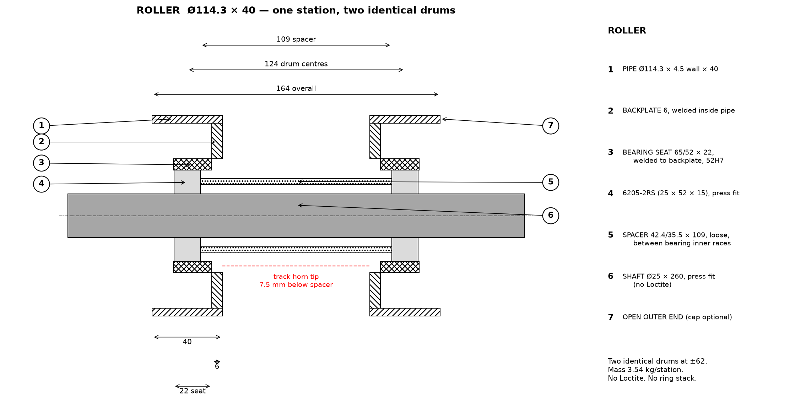
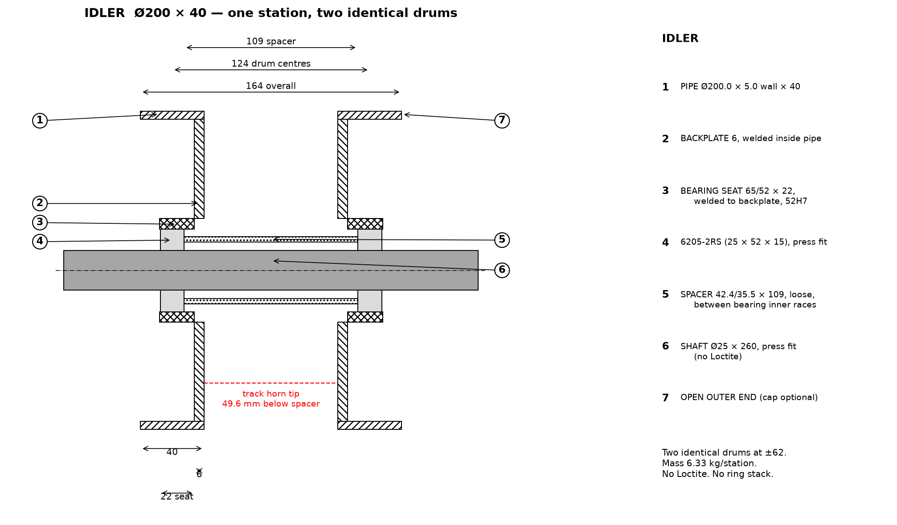

Pipe + backplate with welded bearing seat + loose spacer. No Loctite. No ring stacks. Two identical drums per station. Units: mm.


| Item | Roller | Idler |
|---|---|---|
| Pipe | Ø114.3 × 4.5 wall × 40 | Ø200 × 5 wall × 40 |
| Backplate | 6 mm, OD105.3 / ID65, welded inside pipe | 6 mm, OD190 / ID65, welded inside pipe |
| Bearing seat | 65/52 × 22, welded to backplate, bore 52 H7 | same |
| Bearing | 2 × 6205-2RS (one per drum), press fit | same |
| Spacer | 42.4/35.5 × 109 loose, between bearing inner races | same |
| Shaft | Ø25 × 260, press fit in both bearings, no Loctite | same |
| Drum centres | 124 (±62) | 124 (±62) |
| Mass / station | 3.54 kg | 6.33 kg |
| Horn clearance | 7.5 mm (spacer to horn tip) | 49.6 mm to spacer / 24.2 mm to pipe bore |
| Parts / station | 2 pipes + 2 backplates + 2 seats + 2 bearings + spacer + shaft | same |
v3_roller.step - v3_idler.step
STL parts are in ../cad/v3_roller_*.stl and ../cad/v3_idler_*.stl.